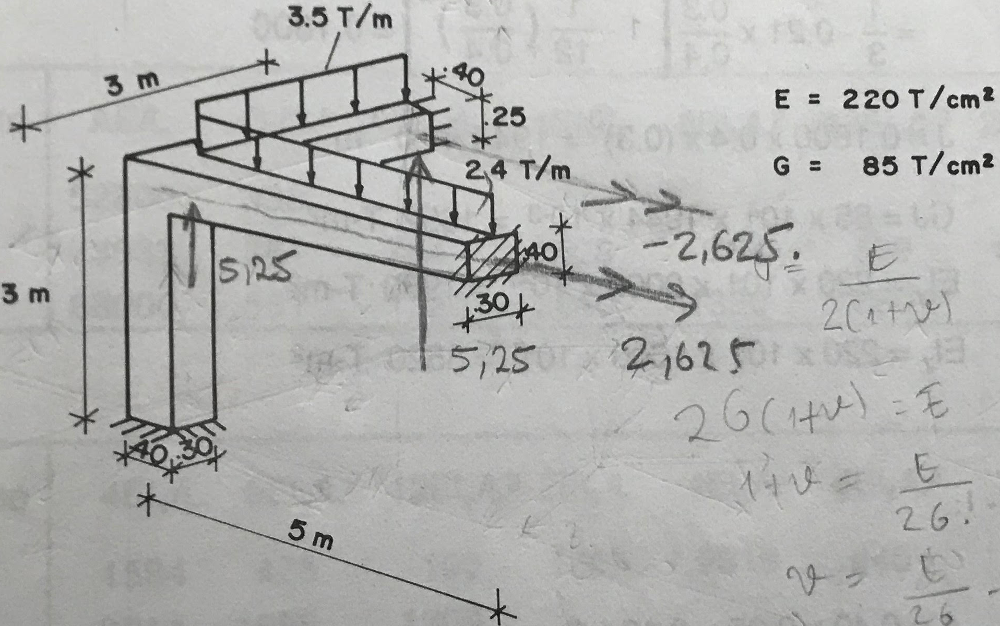

## pyFEM ### Space Frame example Cristian Danilo Ramírez Vargas
## Contents - Clonar el repositorio pyFEM - Problem - Model problem with pyFEM - Comparate Solution
## Clonar el repositorio pyFEM
## Git 1. Abrir la termina 2. Cambiar el directorio actual donde quieres guardar tu copia de pyFEM 3. Clonar el repositorio <pre><code data-trim> $ git clone https://github.com/rvcristiand/pyFEM.git </code></pre>
## Git 4. Cambiar el directorio actual a pyFEM <pre><code data-trim> $ cd pyFEM </code></pre> 5. Cambiar a una versión anterior de pyFEM <pre><code data-trim> $ git checkout f8573a03177742fdce897111ab378eee2ebc3688 </code></pre>
## Problem _Escamilla, Jairo. Microcomputadores en ingeniería estructural. Santa fé de Bogotá: ECOE Universidad Nacional de Colombia. Facultad de Ingeniería, 1995_
## Problem's description _Ejemplo 7.6 - Resuelva matricialmente el pórtico de la figura._
## Problem's description 
## Model problem with pyFEM
## pyCharm Abrir la carpeta pyFEM
## pyCharm Crear un nuevo archivo de python en la carpeta _/test_
## pyCharm De la libreria pyFEM importe la clase Structure <pre><code data-trim> from pyFEM.core import Structure </code></pre>
## pyCharm Cree un nuevo modelo <pre><code data-trim> structure = Structure() </code></pre>
## pyCharm Agregue un nuevo material al modelo <pre><code data-trim> structure.materials.add('material1', 220e4, 85e4) </code></pre>
## pyCharm Agregue nuevas secciones al modelo <pre><code data-trim> structure.sections.add('section1', 'material1', 0.12, 9e-4, 1.6e-3, 1.944e-3) structure.sections.add('section2', 'material1', 0.10, 1.333e-3, 5.208e-4, 1.2734e-3) </code></pre>
## pyCharm Agregue nuevos nudos al modelo <pre><code data-trim> structure.nodes.add('1', 0, 3, 3) structure.nodes.add('2', 5, 3, 3) structure.nodes.add('3', 0, 0, 3) structure.nodes.add('4', 0, 3, 0) </code></pre>
## pyCharm Agregue nuevos elementos tipo pórtico al modelo <pre><code data-trim> structure.frames.add('1-2', '1', '2', 'section1') structure.frames.add('3-1', '3', '1', 'section1') structure.frames.add('4-1', '4', '1', 'section2') </code></pre>
## pyCharm Agregue nuevos apoyos al modelo <pre><code data-trim> structure.supports.add('2', *6 * (True,)) structure.supports.add('3', *6 * (True,)) structure.supports.add('4', *6 * (True,)) </code></pre>
## pyCharm Agregue nuveas cargas al patrón de carga del modelo <pre><code data-trim> structure.load_patterns.add("distributed loads") </code></pre>
## pyCharm Agregue un nuevo patrón de carga al modelo <pre><code data-trim> structure.load_patterns["distributed loads"].distributed_loads.add('1-2', 0, -2.4, 0) structure.load_patterns["distributed loads"].distributed_loads.add('4-1', 0, -3.5, 0) </code></pre>
## pyCharm Solucionar el modelo <pre><code data-trim> structure.solve() </code></pre>
## Comparate solution
## pyCharm Obtener los desplazamientos de los nudos <pre><code data-trim> for node in structure.nodes: print("node:", node.label) for displacement in node.displacements: print("--> {}".format(displacement.label)) print("\t", displacement.displacement) </code></pre>
## pyCharm Obtener las reacciones en los apoyos <pre><code data-trim> for support in structure.supports: print("support: ", support.label) for reaction in support.reactions: print("--> {}".format(reaction.label)) print("\t", reaction.reaction) </code></pre>
# Thank you!